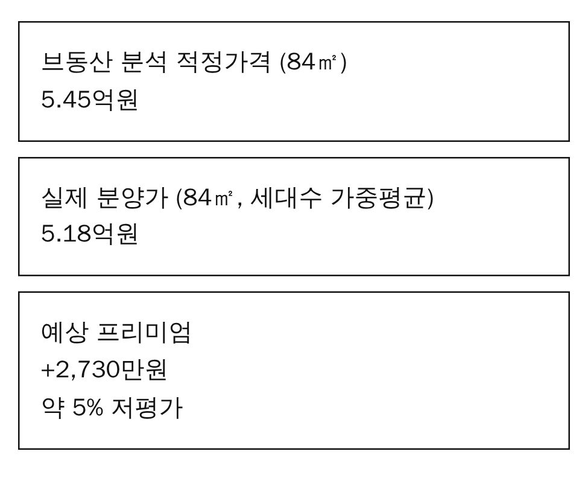
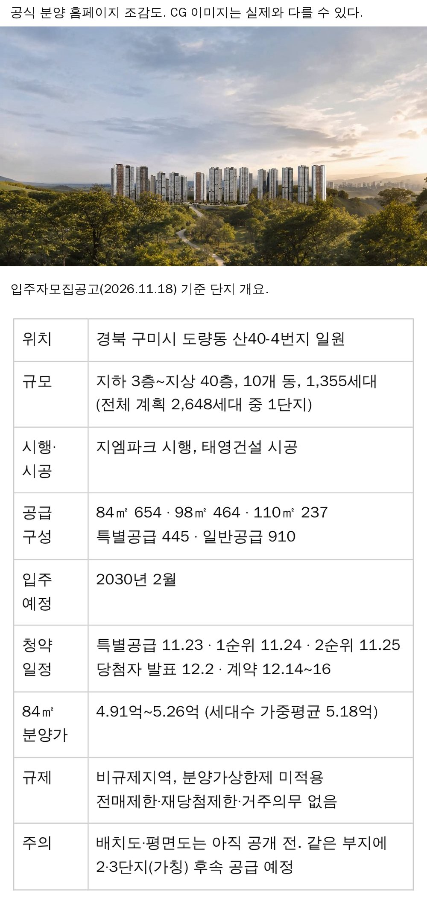
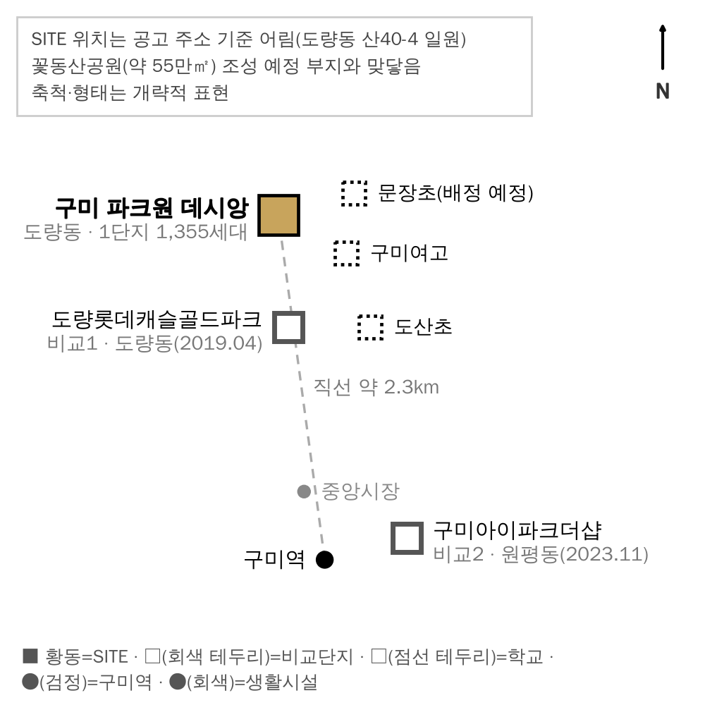
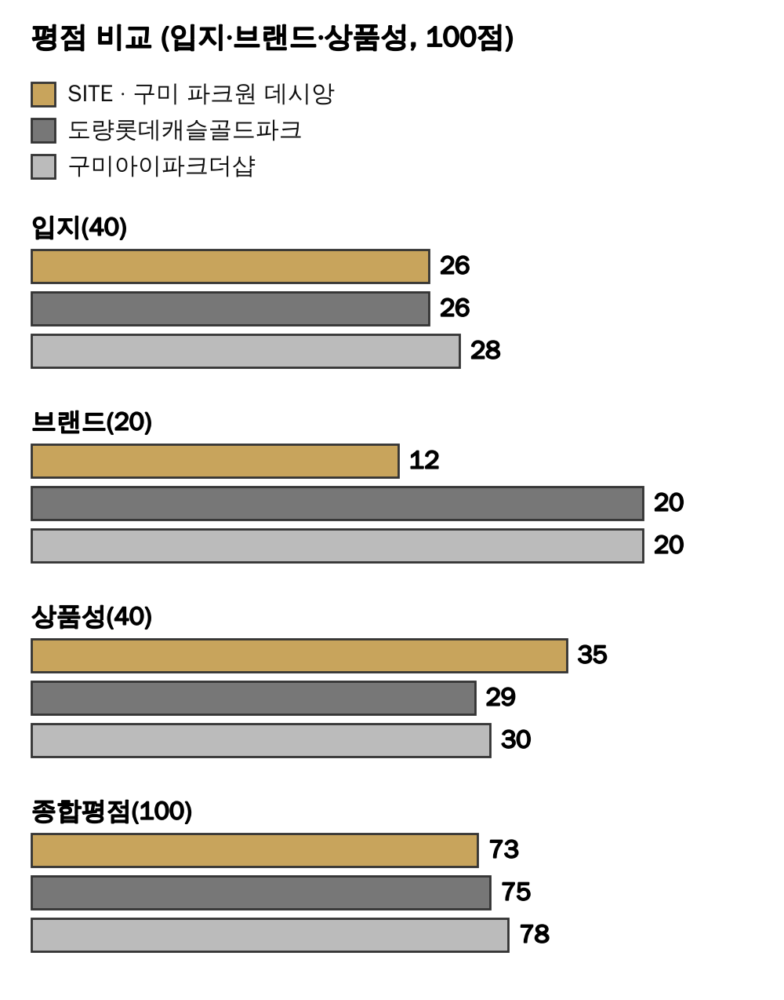
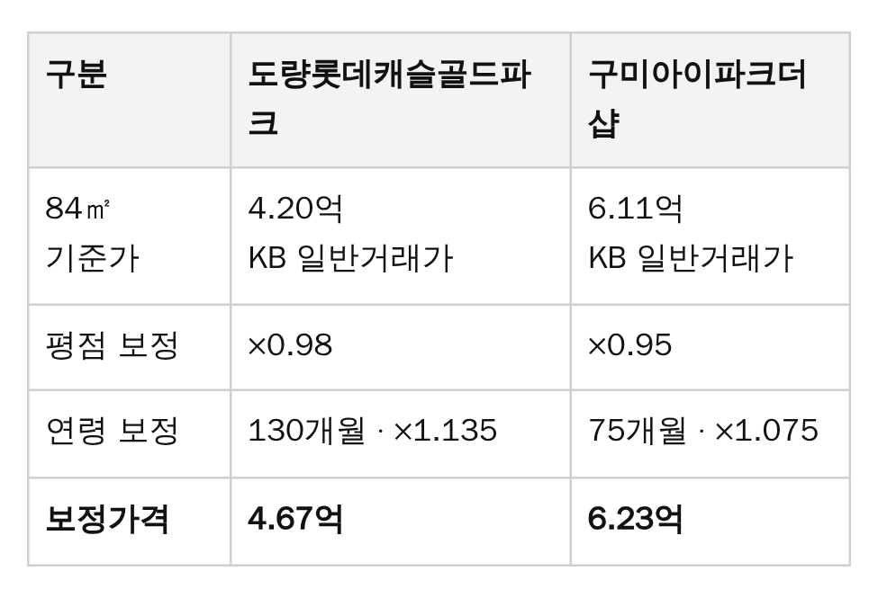
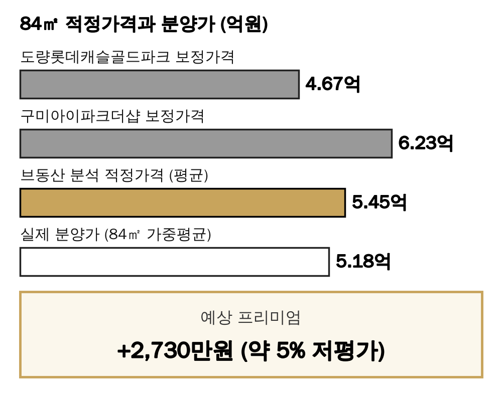
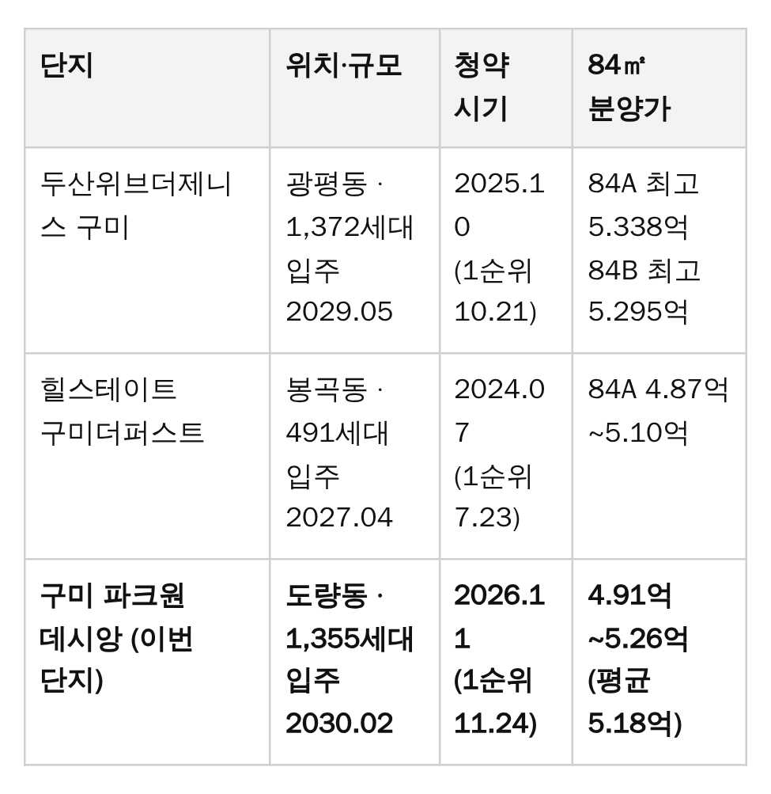
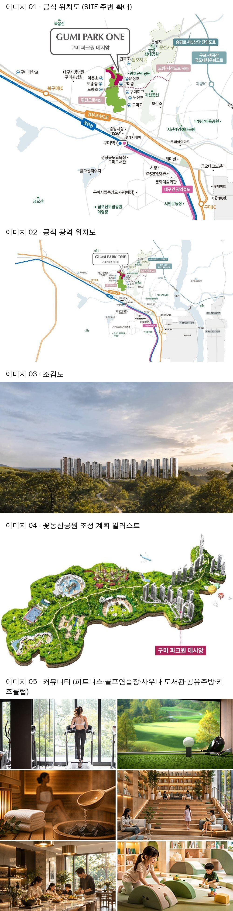
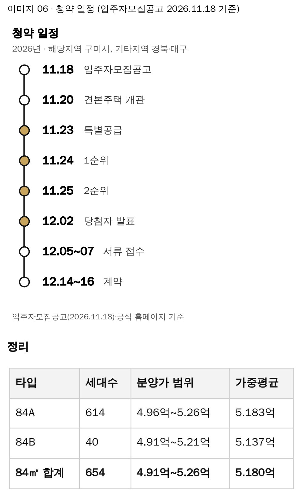

- 제목 복사 → 새 글 제목에 붙여넣기
- 태그 복사 → 태그 칸에 붙여넣기
- 본문 전체 복사 후 본문에 붙여넣기
- 이미지 전체 사진첩에 저장 (공유창에서 '이미지 저장')
- 에디터에서 【사진 번호】 줄을 찾아 그 자리에서 사진 버튼 → 같은 번호 파일 선택 (자리표시 줄은 지우기)
- 카테고리·대표이미지 확인 후 발행
③ 본문 전체 복사
붙여넣을 내용 미리보기
브동산 · 청약 언박싱 No.108 · 2026. 11. 18 (2026.11.18 공고 기준)
구미 파크원 데시앙 | 예상프리미엄 +2,730만, 분양가 총정리
1. 결론부터 — 이 단지 예상 프리미엄은 +2,730만원
경북 구미시 도량동 꽃동산공원 자리에 들어서는 구미 파크원 데시앙의 전용 84㎡를 브동산 모형으로 따져봤다.
같은 동네 기축과 구미역 앞 신축 두 곳을 기준으로 삼으면 분양가가 적정가격보다 조금 낮게 나온다.
【사진 01】 · 핵심 수치 박스
브동산이 분석한 이 단지의 적정가격은 5.45억원, 실제 분양가는 5.18억원으로, 예상 프리미엄은 +2,730만원(약 5% 저평가)입니다.
【사진 02】 · 광역 조감도 외 1장
2. 왜 이 가격이 나왔을까 — 입지와 가격 비교
입지: 공원 끝자락 학교 밀집지, 역과는 거리가 있다
단지는 구미 첫 민간공원 특례사업지인 꽃동산공원의 북쪽 끝, 원호지구와 맞닿은 자리다. 분양 측은 약 55만㎡ 공원을 앞마당처럼 쓸 수 있다고 내세운다.
공고문상 초등학생은 문장초 배치 예정이고, 구미중·구미여고·구미고가 가깝다. 다만 구미역까지는 직선 약 2.3km라 차로 움직여야 한다.
지하철이 없는 지방이라 역 대신 초등학교와 중심상권 거리로 교통을 매겼다. 입지는 40점 만점에 26점이다.
【사진 03】 · 위치 개략도
SITE·비교단지·학교·구미역의 상대 위치를 나타낸 브동산 자체 제작 개략도. 축척과 거리는 실제와 다르다.
공식 위치도의 도량-지산도로와 공원 횡단도로는 예정 도로라 점수에 넣지 않았다.
공고문은 문장로 소음, 주변 전신주·중계기, 공원 내 분묘, 2·3단지 준공 뒤 일부 세대 조망 침해 가능성도 밝혔다.
비교단지: 도량롯데캐슬골드파크 · 구미아이파크더샵
비교단지는 가격을 보고 고르지 않고 정해진 기준으로 골랐다. 구미의 2016년 이후 준공 500세대 이상 24곳을 훑었다.
같은 도량동 이웃으로 약 0.7km 떨어진 도량롯데캐슬골드파크(2019년 4월, 1,260세대)를 골랐다. 가장 가까운 중심권 신축 대단지는 구미역 앞 구미아이파크더샵(2023년 11월, 1,610세대)이다.
원호지구의 푸르지오센트럴파크·원호자이더포레는 도량동이 아니라 뺐다. 산동·옥계·거의동 신축은 외곽 택지라 뺐다.
기준가는 KB 일반거래가(2026.11.13 기준)를 84㎡ 타입별 세대수로 가중평균한 값이다.
【사진 04】 · 평점 비교표
입지 40점·브랜드 20점·상품성 40점, 100점 만점 기준 브동산 모형 자체 산정.
종합평점은 SITE 73점, 도량롯데캐슬골드파크 75점, 구미아이파크더샵 78점. SITE의 점수가 조금 낮아서 비교단지 시세를 각각 2%, 5% 깎아서 반영했다.
【사진 05】 · 표
연령 보정은 SITE 입주예정월(2030.02)과 비교단지 준공월의 차이에 브동산 공식(기타지방 상한 ×1.3)을 적용했다.
두 보정가격은 4.67억과 6.23억, 평균인 브동산 분석 적정가격은 5.45억원. 실제 분양가 5.18억원과의 차이가 곧 예상 프리미엄 +2,730만원이다.
【사진 06】 · 적정가격 그래프
비교단지 2곳의 보정가격 평균이 SITE의 브동산 분석 적정가격. 전용 84㎡ 총액 기준.
3. 브동산 한줄평
예상 프리미엄 +2,730만원 — 공원 옆 대단지 신축에 실거주할 학령기 자녀 가구라면 접수해 볼 만하다.
모형상 분양가가 적정가격보다 약 0.27억 낮다. 다만 같은 도량동 기축 시세(4.20억)보다는 1억원 가까이 높다.
결국 구미역 앞 신축 시세(6.11억)를 얼마나 인정하느냐에 따라 판단이 갈린다. 차이가 약 5%라 비교 기준에 따라 달라질 수 있다.
전매제한이 없고 계약금이 5%라 진입 부담은 낮다. 대신 일반공급이 910세대로 많고 2·3단지 후속 공급도 예정돼 있다.
4. 구미 최근 분양단지, 84㎡는 얼마였나
비교 감을 잡을 수 있도록 최근 구미에서 분양한 단지 두 곳의 84㎡ 분양가를 옮겨 적었다. 입지와 시점이 달라 그대로 견주기는 어렵다.
【사진 07】 · 표
최초 분양가 기준이며 발코니 확장비·유상옵션·취득세는 제외. 언론 보도와 분양 정보 사이트를 종합했다.
아시아경제 보도에 따르면 두산위브더제니스 구미는 1순위 261가구 모집에 2,592건이 접수돼 9.93대 1을 기록했고 이후 완판됐다.
최근 구미 신규 84㎡ 분양가는 4억 후반에서 5억 초중반이었다. 구미 파크원 데시앙의 5.18억원은 1년 전 두산위브더제니스와 비슷한 수준이다.
같은 보도는 구미 미분양이 2024년 2월 1,942가구에서 2026년 2월 890가구로 줄었다고 전했다.
5. 분양 사이트 자료로 한 번에 보기
위치 → 조감도 → 공원 계획 → 커뮤니티 → 청약 일정 순서로 이미지만 이어 붙였다. 배치도·동호수 배치도·평면도는 공식 홈페이지에 아직 공개되지 않아 싣지 못했다.
【사진 08】 · 입지 정보 외 4장
【사진 09】 · 청약 일정 외 1장
공고문의 층별 공급금액과 세대수로 계산한 값. 발코니 확장비(84㎡ 1,350만원)·유상옵션·취득세는 포함하지 않았다. 98㎡(5.64억~5.98억)와 110㎡(6.74억~7.08억)는 이번 글의 계산 대상이 아니다.
84㎡ 가중평균 분양가는 5.180억원, 주력 타입은 614세대의 84A. 84A는 20층 이상 300세대가 5.26억원이다. 특별공급이 445세대, 일반공급이 910세대다.
계약금은 5%(계약 시 1,000만원, 나머지는 30일 이내), 중도금 60%는 2027년 7월부터 6회로 무이자 대출 알선 예정, 잔금 35%는 입주 때 낸다. 해당지역은 구미시, 기타지역은 경북·대구 거주자이고 84㎡ 1순위는 가점제 40%·추첨제 60%다. 청약 경쟁률은 접수 전이라 확인할 수 없고, 동·층별 공급금액과 자격 요건은 입주자모집공고문이 기준이다.
6. 결론
분양가가 적정가격보다 약 0.27억 낮아 예상 프리미엄은 +2,730만원이다. 같은 동네 기축보다는 비싸니 공원·학교를 누릴 실거주 관점에서 접근하자.
자세한 평가표와 적정가격 산출 과정은 브동산 홈페이지에서 확인하실 수 있습니다.
본 글은 정보 제공 목적이며 투자 권유나 청약·매수 대행이 아니다. 실제 청약·계약 전에는 청약홈 입주자모집공고와 공식 안내를 확인해야 한다.
④ 사진 자리표시 ↔ 파일


















- 카테고리: 부동산이야기
- 제목 · 태그 입력 확인
- 대표 이미지(썸네일): aerial-cg.jpg
- 【사진】 자리표시 줄이 모두 지워지고 사진으로 바뀌었는지 훑어보기
- 발행 버튼